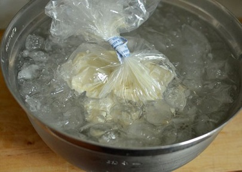
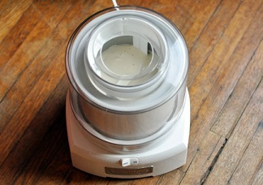

Ingredients Needed
2 1/4 cups whole milk, divided 5 Teaspoons cornstarch2 Ounces cream cheese, very soft 1/4 Teaspoon fine salt
1 Cup heavy cream 2/3 Cup sugar
2 Tablespoons honey 1 Vanilla bean
1 Teaspoon vanilla extract Ice
Equipment Needed
2 Small to medium-sized Prep bowlsSaucepan Big bowl
Whisk Ice cream maker
Shallow freezer container with lid
Plastic wrap or waxed paper
Ice Cream Ingedients
Step 1: Make an ice cream base
In your first small bowl, whisk together the cornstarch with 1/4 cup of milk. Whisk thoroughly to make sure that the milk and cornstarch are smoothly combined. In your second small bowl, whisk the cream cheese until smooth, then whisk in an additional 1/4 cup milk. Whisk in the salt.In a 2-quart saucepan whisk together the remaining 1 3/4 cup milk, the heavy cream, sugar, and honey. Lay the vanilla bean flat on a cutting board and split it open lengthwise. Use the tip of a teaspoon to scrape all these beans into the saucepan, then toss in the whole bean husk as well. Bring this mixture to a simmer over medium heat, whisking frequently. Reduce the heat and simmer for 4 minutes. Remove the hot milk from the heat.
Whisk about 1/2 cup of the hot milk into the cornstarch slurry. Slowly pour this back into the hot milk, whisking constantly. Return to the heat and cook, whisking frequently, until it comes to a boil. Boil for 1 minute then remove from the heat. Whisk in the thinned cream cheese. Remove the vanilla bean. Whisk in the vanilla extract.
Ice Cream Base
Step 2: Chill the ice cream base
A fast and effective way would be to pour your ice cream mix in a bag and submerge it in ice water.
Step 3: Freeze and churn the ice cream base
The most popular and most common way of making ice cream at home is with a "freeze-the-bowl" home ice cream maker. You need extra freezer space to freeze the ice cream bowl until the special fluid inside is rock hard. Then you put in your chilled ice cream base, and let the machine stir the ice cream until it is mostly frozen.
Step 4 and Last Step: Ripen and harden the ice cream in the freezer
Before finishing the mixing, if you want to add in any syrups or fruits into your ice cream mix this is when it should be done.No matter what kind of ice cream maker you use, the freshly-churned ice cream will still be very soft and even runny after it has been churned. In order to get that scoopable texture, and to let the flavors meld and bloom, it's best to freeze the ice cream for at least a few hours before eating.
Scrape the ice cream into a shallow container (to help it freeze faster) and, just like when making custard or pudding, cover the surface of the ice cream completely with plastic wrap or waxed paper. Seal with a lid and freeze for a few hours.
Then scoop and enjoy!